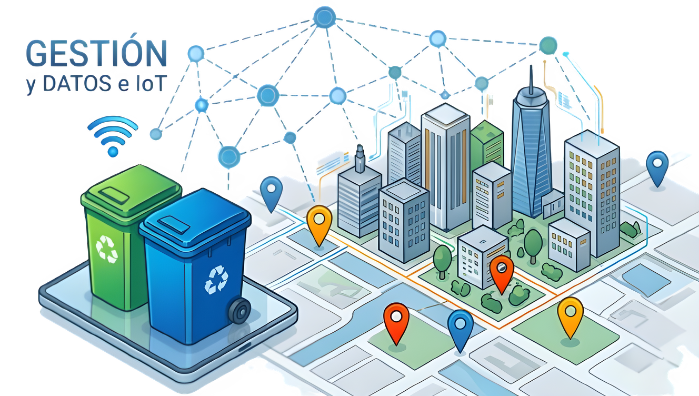
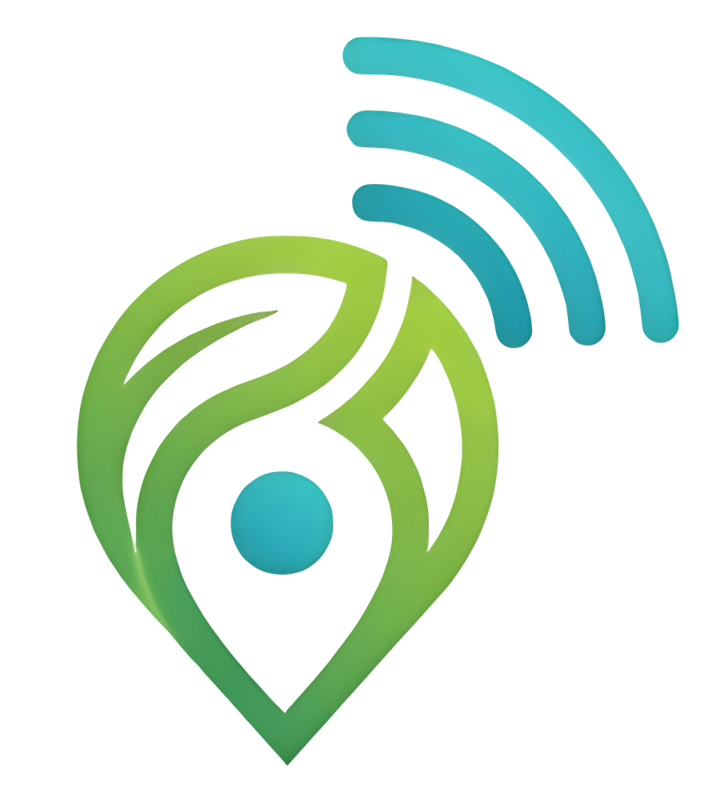

GESTIÓN INTELIGENTE DE RESIDUOS URBANOS:
Ciudades Sostenibles con loT
Optimice la recoleccion, reduzca costos y mejores el medio ambiente con nuestra teconlogia avanzada
SOLICITAR DEMO CONOCER MÁS

Optimice la recoleccion, reduzca costos y mejores el medio ambiente con nuestra teconlogia avanzada
SOLICITAR DEMO CONOCER MÁS
En Eco Track , impulsamos la gestión inteligente de residuos urbanos conectando contenedores, flotas de recolección y municipios a través de tecnología IoT avanzada.
Nuestra misión es ofrecerte una plataforma en tiempo real rápida, segura y eficiente, para que optimizar las rutas de recolección y mantener limpia la ciudad sea un proceso automatizado e intuitivo.
Creemos en un futuro más sostenible y limpio, integrando análisis de datos y monitoreo dinámico para acompañar a las comunidades en cada paso hacia la innovación ambiental.
Eficiencia Operativa
Emisones de CO₂
Monitoreo loT
Trazabilidad
Sensores inteligentes modiendo volumen de llenado y alertas de flota en tiempo real.